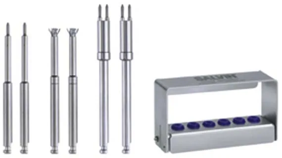
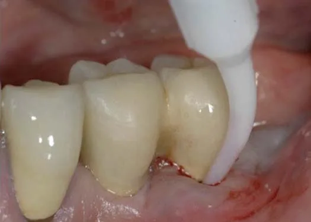

نسخه استخراجشده؛ ترجمه یا تأیید علمی انجام نشده است. وضعیت: captured
پیش از هر درمانی، باید بدانی با چه چیزی سطح ایمپلنت را لمس کنی. اشتباه در این انتخاب، خودش عارضه میسازد.
کورتها:
• «کورتهای استیل ضدزنگ بسیار سختتر از آلیاژ تیتانیوماند و برای استفاده در اطراف ایمپلنتهای دندانی توصیه نمیشوند، چون ممکن است سطح ایمپلنت را تغییر دهند.»
• «کورتهای پلاستیکی بهعنوان ابزار انتخابی برای پیشگیری از آسیب به سطح ایمپلنت توصیه شدهاند.»
• و گزینهی سوم: اسکیلرهای رزین آمورف که با رزین پرنشده یا پرشده عرضه میشوند.
اولتراسونیک: «دستگاههای اولتراسونیک فقط زمانی باید به کار روند که نوکهای پلاستیکی در دسترس باشند.»
ولی نوک پلاستیکی هم محدودیت دارد: «اگرچه نوکهای فلزی توصیه نمیشوند، نوکهای پلاستیکی ممکن است هنگام تمیز کردن اطراف شیارها و رزوههای ایمپلنت در معرض خطر بیشتر ریشریش شدن باشند.»
یعنی هیچ گزینهای بیعیب نیست — نوک فلزی سطح را میخراشد، نوک پلاستیکی خودش تکهتکه میشود.
و یک استدلال مخالف که صادقانه باید نقلش کرد:
«پیشتر نشان داده شده که اسکیلرهای فلزی بهراحتی سمنتوم را نمیخراشند؛ جای سؤال است که سطح ایمپلنت تیتانیومی که سختی موس بالاتری دارد، باید نگرانیای ایجاد کند.»
پس بحث کاملاً یکطرفه نیست. ولی بلافاصله یک محدودیت بنیادیتر مطرح میشود:
«اسکیلرها بهطور کلی ممکن است در برداشتن ذرات بزرگ جرم یا بافت گرانولاسیون مؤثر باشند، ولی برای پیمایش پیرامون و شیارهای سطح اکسپوزشدهی ایمپلنت نسبتاً ناکارآمدند.»
این نکتهی کلیدی است: مسئله فقط «آیا خراش میدهد؟» نیست؛ «آیا اصلاً به آنجا میرسد؟» — و پاسخ برای هندسهی پیچدار ایمپلنت، منفی است.
و همین است که سراغ ابزار بعدی میبردمان.
ایرپالیشینگ — و یک ممنوعیت صریح:
«بنابراین ایرپالیشرها با ذرات بیکربنات نباید در اطراف ایمپلنتها یا پروتز به کار روند.»
و جایگزین: «پودر گلایسین آمینواسیدی کمسایش نشان داده شده که درمانی مؤثر برای برداشتن بیوفیلم بدون آسیب به سطح ایمپلنت یا بافتهای سخت و نرم است.»
به سه چیزی که گلایسین همزمان حفظ میکند دقت کن: سطح ایمپلنت، بافت سخت، و بافت نرم. و برخلاف اسکیلر، پودر میتواند به شیارها برسد.
و ترتیب کار: «برداشتن رسوبهای درشت باید ابتدا با اسکیلر انجام شود.» — یعنی هر ابزار جای خودش را دارد: اسکیلر برای درشت؛ مادهی شیمیایی و گلایسین برای بیوفیلم.

صریح بدان که پاکسازی مکانیکی بهتنهایی کافی نیست:
«همراه با دکنتامیناسیون مکانیکی، یک فرآیند دکنتامیناسیون شیمیایی باید دنبال شود، با استفاده از ترکیباتی مانند داکسیسایکلین/تتراسایکلین یا اسید سیتریک.»
«همراه با» — نه بهجای آن. دو فرآیند مکملاند.
پروتکل عددی اسید سیتریک:
«اسید سیتریک ۲۰ تا ۴۰ درصد را با پلت پنبه یا اسپاتول یا برسهای تیتانیومی به مدت ۶۰ ثانیه به کار ببرید (با سالین شستوشو دهید).»
سه عدد را نگه دار: غلظت ۲۰ تا ۴۰ درصد، زمان ۶۰ ثانیه، شستوشو با سالین. و برس تیتانیومی ابزاری است که هم مکانیکی کار میکند و هم ماده را میرساند.
فهرست کامل آنتیسپتیکهای در دسترس:
«کلرهگزیدین ۰٫۱۲ یا ۰٫۲ درصد، هیپوکلریت سدیم ۱٫۰ درصد، پراکسید هیدروژن ۳٫۰ درصد، اسید سیتریک ۴۰٫۰ درصد، EDTA ۲۴ درصد، پوویدون-آیوداین ۱۰ درصد، و فنولها/روغنهای اسانسی.»
و یک آنتیسپتیک مؤثر در پریایمپلنتیت به چهار ویژگی نیاز دارد — نفوذ به بیوفیلم، ماندگاری اثر، سازگاری بافتی و مقاومت کم — که نخستینش نفوذ به بیوفیلم است — چون مادهای که نتواند وارد بیوفیلم شود، فقط سطح آن را میشوید.
و یک نسخهی عملی که باید بلد باشی:
«محلول رقیقشدهی هیپوکلریت سدیم ۰٫۲۵ درصد = یک قاشق چایخوری (۵ میلیلیتر) وایتکس خانگی استاندارد ۶ درصد، رقیقشده با ۴ اونس (۱۲۵ میلیلیتر) آب.»
یک نسخه با مواد در دسترس — و دقیقاً به همین دلیل باید نسبت را درست بدانی، چون هیپوکلریت سدیم در میان این مواد بیشترین سمیت بافتی را دارد.
ابزار جراحی دکنتامیناسیون: «مدیریت جراحی با کورتها، برسهای تیتانیومی تخصصی با هندپیس ایمپلنت، و/یا هندپیس پالیش گلایسین انجام میشود.»
سه ابزار، سه سازوکار: کورت برای بافت گرانولاسیون، برس تیتانیومی برای پاکسازی مکانیکی رزوهها، و گلایسین برای بیوفیلم باقیمانده.
و آنتیبیوتیک موضعی هنگام جراحی نجات:
«آنتیبیوتیک موضعی توصیهشده حین نجات جراحی ایمپلنت، تتراسایکلین با محلول ۵۰ میلیگرم در میلیلیتر است.»
و دلیلش چیزی فراتر از ضدمیکروبی بودن است: «مطالعهای با کاربرد تتراسایکلین خالص، رااستئواینتگریشن پس از ۴ ماه نشان داد. اکیداً توصیه میشود تتراسایکلین در درمان نجات جراحی پریایمپلنتیت گنجانده شود.»
«رااستئواینتگریشن» — یعنی استخوان دوباره به سطحی که زمانی آلوده بود میچسبد. این هدف نهایی هر درمان جراحی پریایمپلنتیت است و نشان میدهد که دکنتامیناسیون فقط تمیز کردن نیست؛ آمادهسازی سطح برای پیوند دوباره است.
